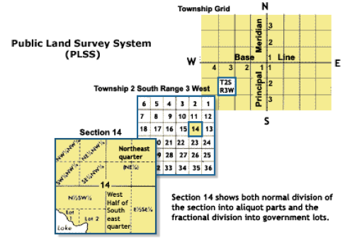
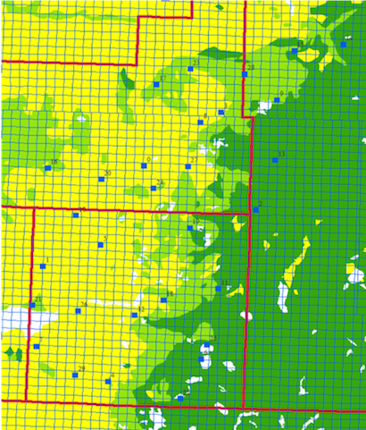

§ Methods
In this research, we utilized both historical and modern aerial imageries as well as historical land survey data for past landscape reconstruction and land use classification; we then used soil survey data and state agricultural statistics to reveal the reasons behind the land cover and land use patterns.
1. Public Land Survey System (PLSS)
The main approach of subdividing and describing the otherwise continuous land we referenced in this research is using the Public Land Survey System (PLSS). According to USGS, the rectangular Public Land Survey System was adopted by the U.S. Department of the Interior, Bureau of Land Management (BLM) starting from the late 18th century during the land survey period for the majority of the United States territory, excluding some water bodies, national parks, military reservations land had already been granted. In general, the PLSS system divides land into 6-mile-squared township, and then subdivide each township into 36 one-mile-square sections (USGS). Further division of each section is mostly used for land allocation and other landownership purposes, but in our research the smallest unit of land for our analysis purpose would be a section in a township. When identify or describing a section, we would follow the PLSS’s convention, for instance, in the example of figure 1, T2SR3WS14-T for township, S for South of baseline, R for range, W for West of principal meridian, and lastly section 14.
Fig. 2 Public LandSurvey System, retrieved from The Public Land Survey System, USGS.
2. Random Sample Selection
To select a finite set of data points, we used spatially balanced random sample selection. Depending on aerial data availability and whether the points are in water bodies or not, we further eliminated the points that are not suitable for detailed analysis and had a total of ten sample sites scattered across the three counties for in-depth study. The spatially balanced sample selection design tool in ArcGIS software is based on Theobald et al’s research on random survey designs for natural resource applications (2007). Adopting this simplified probability-based survey design is because it computes “probabilities based on simple categories represented by geographic features (e.g., vegetation types), categories that are composed of multiple factors (e.g., elevation zones and vegetation types), and continuously varying inclusion probabilities to reflect an environmental gradient such as temperature or precipitation” (Theobald et al., 2007), thus we would be able to have randomly distributed sample points evenly selected from all the sections within the transitional region across three counties. This region across the three counties we used for randomly selecting sample points eliminated areas such as the Glacial Lake Agassiz lowland in Northern Polk County, the uniform prairie region in Western Polk County that is no longer considered the transitional ecotone, and the Eastern part of Clearwater County that is uniformly forest.
Fig. 3 The map indicates the second set of 30 sample points generated from using spatially balanced random sample selection tool in ArcGIS and their spatial locations in the study area.
We started by selecting an initial set of 20 sample points. After numerically labeling the points in ArcGIS, we went through the sample points in numerical order to check if they are on large water bodies, or on Indian tribe-owned land, if they are too far from the transitional region that we are mainly concerned about, and if there are aerial photos available for the section where the point locates in; then we eliminate the sample points based on the above limitations. However, based on these criteria, out of 20 points, we only have around 7-8 eligible sections available for further analysis, and we need at least 10 sections in order to capture the varying land use patterns on the landscape. Therefore, we abandoned this initial random selection of sample points and started a second set of random samples. The second set we randomly selected 30 sample points; the following figure shows the set of 30 sample points (Fig. 3). After checking the limitations mentioned above, we have 10 sample points qualified for further analysis; the Table 1 below displays these 10 points.
| Point | Township | Code | County | RMS |
|---|---|---|---|---|
| 2 | T147R38S31 | E | Clearwater | 4.58 |
| 4 | T143R41S21 | B | Mahnomen | 2.87 |
| 5 | T146R41S29 | C | Mahnomen | 4.29 |
| 9 | T149R38S22 | G | Clearwater | 1.68 |
| 11 | T148R38S28 | H | Mahnomen | 10.41 |
| 13 | T148R38S28 | I | Clearwater | 3.42 |
| 17 | T149R40S16 | J | Polk | 2.31 |
| 18 | T145R40S28 | K | Mahnomen | 5.33 |
| 20 | T147R41S17 | F | Polk | 4.47 |
| 28 | T149R38S06 | D | -- |
Table 1 The table indicated the sample points, their township, sections and the letter code used in this research, as well as their residual value from the georeferencing.
3. Historical Aerial Imagery and Classification
In order to establish an understanding of the post-settlement land use condition in the ecotone of the three counties, we first examined the earliest historical aerial photographs available of the three counties, which are aerial photos collected by the Minnesota state government in the 1930s. The initial examination of the aerial photos allows us to gain an initial understanding of what are the major land use categories of this region, which leads us to determine the six major land use types: savanna, pasture, forest, cropland, other and water. Savanna includes the scattered woodland and pasture with scattered trees on top. Pasture class includes more uniform grassland with no trees or few trees on top. Forest includes dense coverage of deciduous or evergreen trees. Land with straight and clean edges indicating human management, as well as evidence of plowing and irrigation evidence, would be classified as cropland. Other class includes roads, houses, warehouses, factories, farmyards, and the land surrounding these establishments that show evidence of active human settlement. Water class includes water bodies of different sizes as long as recognizable from the given scale aerial photos, shorelines, and the surrounding marsh areas. Establishing the land use classes provides a fundamental guideline for the following step of digitizing the aerial photos.
4. Historical Aerial Imagery and Georeferencing
One issue to note before digitizing the historical aerial imagery or using them for any sort of geographical analyses is that they have not readily been georeferenced, which means that they do not have geographic coordinates associated with the imagery. Adding spatial reference information to these imageries geometrically corrects these imageries and allow the scale of the images to become uniform, which will fulfill our later purposes to measure true distance and calculate areas. We used the ArcGIS Georeferencing tool to perform this task and project data all to projection NAD 1983 UTM Zone 15N. The relatively low resolution of these first-generation imagery adds some difficulty into georeferencing. We used the orthorectified aerial photo from 2015 to georeference our historical photos. These 2015 imageries already contain spatial reference information and we will discuss about them in more details later. Each historical aerial photo, we select at least 10 ground control points or at least 10 pairs of links (between historical images and the 2015 images) at the defined object boundaries such as road intersections to georeference or transform the images. The transformation function we used is the default first-order or affine transformation, which requires only 3 pairs of links to perform the transformation, more than 3 could introduce errors to the mathematical calculation (which are the residuals) for the transformation. However, due to the low-resolution and the changes to the objects (such as road curvature change) of the historical images, we would have a higher likelihood to have points positioned wrong if we only select 3 control points. In this case, around 10 control points will increase the overall accuracy. Also, each pair of links established yield a residual value, and the overall residual of the entire link table or the Root Mean Square(RMS) error thus is changed. This RMS value describes how consistent the transformation is between the different control points, which could have some influence on our land use area calculation later on. Therefore when we georeference, we try to maintain the RMS error in the range of 4.0-5.0. In one or two cases, we have a landscape that is very complicated and changed greatly from the modern-day’s, the residual level would be high even after several rounds of re-selecting control points. See Table 1 for the overall residuals for the ten studied sections. Lastly, after we are satisfied with the RMS and more importantly the over accuracy, we would always rectify the imagery to create a new raster dataset for later digitization and other processing.
5. Historical Aerial Imagery and Digitization
Fig. 4 (left) One example of the land surveyor’s notes before the Euro-American settlement. This page describes the East border of Town 143 Range 41 Section 21.
Fig. 5 (right) One example of the plat map drawn by the land surveyors based on their observations of the landscape as they survey the land. The locations, the relative sizes and distances of the features are not drawn to scale.
After we determined the six main land use categories, we start to digitize the aerial photos using ArcGIS software into vector polygons in order to calculate the areas of each land use type. The 1930s aerial photos are archived by John R. Borchert Map Library at the University of Minnesota, and each aerial photo could include multiple sections of one township usually, sometimes, the aerial photos would capture the boundary area two neighboring townships. However, we only digitize the section where the randomly selected sample point is located in, so whether the photo covers one township or two townships does not matter, as long as the photo covers the section with the sample point completely; if not, we would look at a different aerial photo taken in the surrounding area of the sample point; if there are no photos that actually capture the section completely, the sample point is abandoned due to insufficiency of data, and then we could iterate to the following sample point and check it the same approach. These archived 1930s aerial photos provide the earliest pictorial information we need to understand the Minnesota landscape objectively. Similar to georeferencing the historical photos, the coarse spatial resolution and black-and-white nature make it harder to identify the features in the photos. Therefore, we laid out several guidelines to follow for digitization to keep consistency, such as defining a minimum area for polygons to be categorized. We are not interested in the area of one tree in the cropland, but in capturing the larger scale trend, such as If the woods next to the human settlement looked very dense, they could be planted for blocking winds, hunting or other purposes related to human activates; if they look relatively scattered or open, they could be classified into savanna; when interpreting prairie land cover, there could be lots of wetland area and they look like pasture, we generally identify them as pasture if the texture is more uniform and smooth, if the texture is clearly different from other pasture in the same section and the area is closer to a waterbody, it is classified as water. In unique cases when some features are too ambiguous, such as darker patches that could be water bodies or statins on the films, we would reference the land surveyor’s notes (Fig. 3) and the plat maps (Fig. 3) from pre-settlement time, but never the modern aerial imagery or other means of double-guessing by going back to adjust the digitization based on your later interpretation, because of which would bias our comparison of the land cover from these two time periods. Here is to note that we do not fully rely on land surveyor’s notes and the plat maps to understand the pre-settlement land cover condition is largely related to the uncertainties and biases in the original documentation of the land features as well as our interpretations of these data.
6. Modern 2015 Aerial Imagery
After the initial check of 1930s aerial data quality. We continued to gather aerial imagery of the same geographic areas of the modern days. The most complete and recent aerial dataset we could find of the study area is from 2015 National Ag. Imagery Program(NAIP) Mosaic acquired at the USDA Geospatial Data Gateway archive. These imageries are already orthorectified, meaning they have spatial information already. Therefore, we could directly use these for land use digitization and classification. Methods for these are the same as for aerial photos. The spatial scale that we work on to digitize the raster data is maintained at 1:4000.
7. Land Use Matrix
Using the union tool in ArcGIS, we overlay the two layers that were digitized from the 20th century and the modern day’s aerial photos. The unions or the overlapping areas suggest the land use class that exists in place in both the past and in the modern days. We check the attribute tables for the polygons to see if unions exist between these two classes or if it is empty. Then we query for the overlapping area. Finally, we construct a matrix for the six classes, yielding 36 possible combinations (Table 2).
| Point 2 T147R38S31 Clearwater Code: E | Savanna/1930s | Pastures/1930S | Forest/1930s | Cropland/1930s | Other/1930s | Water/1930s |
|---|---|---|---|---|---|---|
| Savanna/2015 | ESS=14.01% | EPS=3.15% | EFS=3.95% | ECS=0.63% | EOS=1.27% | EWS=0% |
| Pastures/2015 | ESP=0% | EPP=0% | EFP=0% | ECP=0% | EOP=0% | EWP=0% |
| Forest/2015 | ESF=9.63% | EPF=0.88% | EFF=6.49% | ECF=0.54% | EOF=0.24% | EWF=0% |
| Cropland/2015 | ESC=17.45% | EPC=1.67% | EFC=4.18% | ECC=29.74% | EOC=0.24% | EWC=0% |
| Other/2015 | ESO=2.06% | EPO=0.39% | EFO=0.59% | ECO=1.19% | EOO=1.63% | EWO=0% |
| Water/2015 | EPW=0.05% | EPW=0% | EFW=0% | ECW=0% | EOW=0% | EWW=0% |
| Sum of Union Area (SA) | 2587339.71 |
Table 2 Illustration of the process to construct a 6*6 matrix for capturing the change of each land cover class, as well as the calculated precutting of change for point 2.
We fill out this matrix with calculated results of the percentage of change of each cell against the sum of the digitized area (Table 2 above). We then round all the results to two decimal places. Here, we need to note that we did not divide each union against the total area (TA) of the section, even though all these digitized polygons are within one polygon. The reason is even with careful digitization, some slim widgets or areas of missing digitization could exist and the summed area (SA) of union area would not add up equal to the TA of the section. Since we are only interested in the percentage of changes in different land cover classes, therefore dividing the union area or the stable land cover area by the SA is more appropriate.
8. Soil Survey Data
After quantified land cover/land use changes, we then overlay the USDA-NRCS Soil Survey data with our digitized land use classes to establish an understanding of the relationship between soils and vegetation in order to understand whether there was a significant mismatch between these patterns during the settlement era, indicating the soils’ delayed response to past vegetation change. The earliest quality soil survey data for this region were collected from the early- to mid-20th century, which is the post-settlement era, however, using this data is valid because we expect soils do not change fast enough in a fifty-year time scale. A full Alfisols to Mollisols transition takes more than 100 years in the physical conditions of our study area.
In our study, we mainly examine two land cover classes, cropland and forest, and two soil orders, Alfisols and Mollisols. These two land covers types are expected to have the most changes from the Euro-American settlement to present. Alfisols and Mollisols are two prominent soil orders that lie under the forest vegetation and prairie vegetation correspondingly. According to the soil classification defined by the Department of Soil Science at University of Minnesota, Alfisols are “soils with evidence of strong development of distinctive properties, including a fine-textured subsoil relatively high in nutrients, usually formed under forest vegetation” and Mollisols are “soils with a deep, dark, fertile topsoil, usually formed under prairie vegetation”.
In ArcGIS, we first queried the soil orders that have major components as “Alfisols” and “Mollisols”, then used the Union tool to find the overlap between land use (cropland and forest) and soils (Alfisols and Mollisols). The overlapping area of each land use and soil pair is calculated and documented as a matrix for all the sections (see Table 3 below). The percentage of each land use and soil pair over the total area of cropland or forest is also calculated (see Table 4 below). Through this examination of soil survey data and vegetation overlay, we are able to understand the Euro-American settlement preference related to soil. For example, the kind of soils that were heavily used for farming by the Euro-American settlement, are more likely to be disturbed and experience changes (Sanderman, Hengl, & Fiske, 2017), such as soil structure, soil compaction, erodibility and carbon storage capacity.
| Point 9 (CW) | Cropland | Forest |
|---|---|---|
| Mollisols | 474257.61 | 187659.24 |
| Alfisols | 517120.92 | 101044.64 |
Table 3 Overlapping area and the percentage between land use and soils.
| Point 9 (CW) | Cropland | Forest |
|---|---|---|
| Mollisols | 30.16 | 43.01 |
| Alfisols | 32.88 | 23.16 |
| Total Cropland Area | 1572729.22 |
Table 4 Percentage of each land use and soil pair over the total area of cropland or forest.
9. Agriculture Data
In order to provide some explanations and to validate our analysis results, we examined historical cattle and crop statistics collected for our study area from the National Agricultural Statistics Service (NASS) at the United States Department of Agriculture (NSDA). We compared the trend we see in cattle statistics from the 1930s to present to explain the change we see in the pasture class in our land cover analysis. When examining the crop production, we only consider Mahnomen County and Clearwater County, because the large part of Polk ounty locates in the Red River Valley which is in the floor of Glacial Lake Agassiz, and the agricultural characteristics is more complicated and different from the rest of our study area, thus, is not discussed here. We examine the major crops harvested (soybeans, corn, and wheat) from the 1930s to 2010s and compare the trend of cropland area we analyzed from the aerial images to validate our analysis. Furthermore, we examined the harvested spring and winter wheat in the study area throughout the time span, in order to understand if the changing climate has influenced the agriculture in this region of Minnesota.